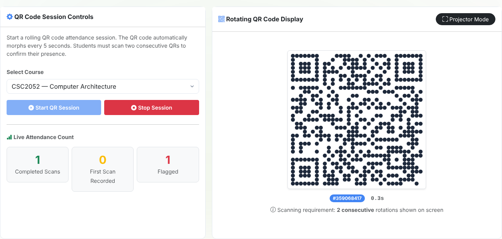
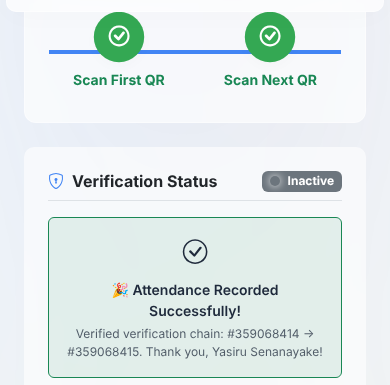
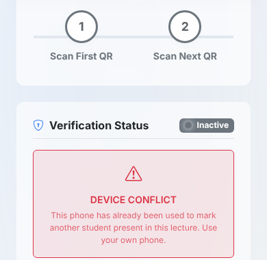
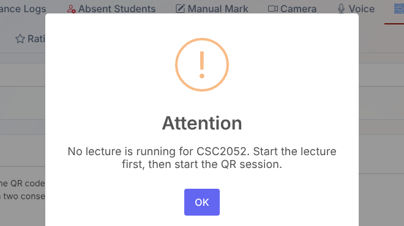

Pick a scenario, or press “Scan the screen” on the phone yourself.
The lecturer's screen shows a new code every 5 seconds. A student must scan two codes in a row, during the lecture, from their own phone. A photo, an old code or a borrowed phone all fail.
This is a working model of the server rules in api/attendance/qr/record.php, with the same checks in the same order and the same messages. Scan normally, or pick a trick below and watch which check stops it.
invalidexpiredno_sessioninvalidalready_markednot_enrolleddevice_conflictfirst_scanPick a scenario, or press “Scan the screen” on the phone yourself.
Time is cut into 5-second slots. Each slot gets a fresh random 128-bit token, stored on the server for the running lecture. The code on screen is just SS-QR|course|token|slot.
expired.The rotating, two-scan design stayed. Testing the real system against a copy of its database found four bugs; they are fixed, and three upgrades close the remaining gaps.
device_conflict.qr_flags and counted live on the lecturer's screen.



19 scenario tests against the real PHP API and a copy of the database (with made-up names), all passing, plus a run through the real lecturer and student pages in a browser.
QR is the quick, no-hardware method. For high-stakes attendance, pair it with fingerprint or face.
| File | Change |
|---|---|
api/attendance/qr/record.php | Lecture-bound tokens, device check, flags, admin role fix, attendance recorded without the broken transaction |
student_dashboard.php | Sends an anonymous per-browser device_id with each scan |
teacher_dashboard.php | “Flagged” counter; clear message when no lecture is running |
sql/migrations/009_qr_upgrade.sql | session_id and device_hash columns, qr_flags table (also applied automatically on first use) |